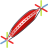
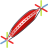

The Muscle object is made of two primary components: the muscle geometry and the muscle rig.
The muscle geometry can optionally be made up of a NURBS surface, a polygonal surface, a collection of sphere primitives, a tetrahedral mesh, or an arbitrary model referenced from another object. The muscle geometry is typically used to displace skin via either a deformer or using a physically based simulation.
The muscle rig is made up of a central cage (the inner core) that is drawn through a series of control nulls (handles). The nulls can be positioned and rotated to shape and twist the inner core. The muscle rig end points, also referred to as the head and tail anchors, can be parented or constrained to other objects in your scene.
Tip
The muscles can easily be set up to follow along with your animated character in a natural way, when attached to the FK/IK bones of your character rig.
Muscle objects have a variety of built-in features that enhance creature rigging:
-
Muscles be used both for FEM and non-FEM applications. ie, as physically simulated soft body objects, or as regular geometry deformers.
-
Muscles can be shaped with a profile curve.
-
You can reference any arbitrary geometry and have it act as your muscle geometry.
-
Non-FEM Muscles can automatically have their radius adapt to changes in overall length or in response to a tension parameter to mimic volume preservation.
-
Muscle rig handles can be keyframed and animated.
-
The muscle rig can be automatically animated with a spring-based utility that will add jiggle to the overall curvature of the muscle.
-
You can preview the physical qualities of a muscle by enabling its built-in dynamics simulator.
-
You can quickly draw the shape of your muscle and set it to the desired depth beneath your character’s skin by drawing a stroke directly onto your skin surface.
The rigged muscle is the central building block for creating complex musculature setups. It contains a number of hooks and parameters that the rest of Houdini’s muscle system rely on.
A rigged muscle object give you the opportunity to take arbitrary geometry and drive it with a single muscle rig. If you want to have more complex rigs control your muscle geometry, the 
 Franken Muscle object can be used to mix together any number of geometry and rig objects.
Franken Muscle object can be used to mix together any number of geometry and rig objects.
For viewport tool interaction help see:  Muscle.
Muscle.
Parameters
Muscle ID
A tag used to identify this muscle asset within the muscle system. A muscle ID can be any string or numeral. The muscle ID is used by other muscle assets to group muscles that share a common muscle ID, or to keep muscle influence separate where muscle ID’s are unique.
For example, the Muscle Deform SOP will treat muscles with a shared, common muscle ID as a single compound displacement tool.
Also,  Tissue Solver SOP will attach region constraints to muscles if the constraints and the muscles share common ID’s.
Tissue Solver SOP will attach region constraints to muscles if the constraints and the muscles share common ID’s.
Flex
Tension
This parameter drives muscle flexing. A tension value of 0.0 will put the muscle in a fully relaxed state, while a value of 1.0 will be fully tensed. Other parameters like Contraction, Bias, Concentric Scale, and Tightness, can all be driven by varying this single Tension parameter.
Muscle Radius Scale
The radius xyz values affect the independent axis scaling applied to the muscle geometry during flexion. If you wish to keyframe the concentric scale of a muscle, using the Radius parameter will scale the muscle geometry without affecting the construction radius.
Concentric Scale
Concentric scale affects the scale of a muscle radially from the central inner core. Scaling of this type is only applicable in non-FEM workflows and meant to mimic the effects of volume preservation using a squash and stretch approach. In dynamics simulation, volume preservation will be calculated according to the physical properties of the muscle tissue, and therefore these settings will be ignored by the solver.
Driver
This dropdown menu determines how concentric scaling will be applied to your muscle.
Driven by Tension
The High and Low Tension Scale parameters will set the extents of the scaling in response to the Tension parameter. When Tension is low, the scaling will approach the Low Tension Scale value. When Tension is high, the scaling will approach the High Tension Scale value.
Driven by Length
The length of the muscle is used to scale the muscle radially. When the muscle’s length approaches the Compressed Length, the radial scale will approach the Compressed Scale. When the muscle’s length approaches the Stretched Length, the radial scale will approach the Stretched Scale.
Off
The Radius scale values are interpreted directly without any additional squash or stretch.
Isometric Scale
Isometric Scaling is the scaling of a muscle along the axis of its inner core or fiber direction. This axial scaling has two controllable qualities: Bias and Contraction amount.
Driven by Tension (Bias)
If enabled, bias is driven by the Tension parameter. Use the High Bias parameter to set this muscle characteristic when Tension is at its maximum.
Bias
Bias affects the relative localized scaling along the axis of a muscle. As a bias value approaches 0.0, a muscle will compress towards the head of the inner core. As the bias value approaches 1.0, the muscle will compress more towards the tail of the inner core. This parameter will affect the muscle bias directly and independent of the tension value.
Driven by Tension (Contraction)
If enabled, contraction is driven by the Tension parameter. Use the High Contraction parameter to set this muscle characteristic when Tension is at its maximum.
Contraction
The contraction scaling quality scales a muscle using compression from the ends of the inner core inwards towards the middle. As Contraction approaches 1.0, a muscle will squeeze along the axial direction of the inner core or muscle fiber. As the contraction value approaches 0.0, the axial scaling is more uniform along the length of the inner core.
Straightening
Driven by Tension (Tightness)
If enabled, Tightness is driven by the Tension parameter. Use the High Tightness parameter to set this muscle characteristic when Tension is at its maximum.
Tightness
Tightness will affect muscles differently depending on whether you are using non-FEM or FEM simulated muscles. When muscles are solved using FEM dynamics, the tightness value is used to boost the overall scaling amount applied to the muscle fibers. This will have the effect of making a slack muscle go taught. When muscles are animated with a non-FEM workflow, the tightness value will mimic the effect of a tightening muscle by straightening any curvature along the inner core.
Tension Settings
High/Low Tension Scale
These are the scale factors mapped to the Tension amount. When Tension in 0.0, the Low Tension Scale is applied. When Tension is 1.0, the High Tension Scale is applied.
High/Low Bias
When Driven by Tension is active, this parameter sets the bias response of the muscle when muscle tension is at its maximum.
High/Low Contraction
When Driven by Tension is active, this parameter sets the contraction response of the muscle when muscle tension is at its maximum.
High Tension Tightness
When Driven by Tension is active, this parameter sets the tightness response of the muscle when muscle tension is at its maximum.
Compressed/Stretched Scale
These are the scale factors mapped to the length of the muscle. When the muscle is at or below the Compressed Length, the Compressed Scale is applied. When the muscle is at or above the Stretched Length, the Stretched Scale is applied.
Handles
Handle Scale
This is the scale value applied to the muscle handles visible in the viewport. The handle scale is a visual aid only and does not affect any functional part of the muscle.
Keep Position When Parenting
When parenting relationships are changed, determine whether or not the world space position of the muscle will be maintained.
Output Transform
If any object node is wired to the output of this muscle asset, this parameter designates one of the muscle’s internal nodes as the source for the output transformation. For example, if this parameter is set to Center Handle, attaching a child node to the output of this muscle will transform the child along with the center handle.
Handle Transforms
Reset Handle Transforms
Activating this button will reset all transform values for a muscle and return the handles to their default positions.
Translate/Rotate
The local translation and rotation values applied to each of the muscle handles.
Geometry
Parameters found on the Geometry tab are used to specify how a muscle is to be constructed.
Build Settings
Build
This dropdown menu allows you to choose from 3 different construction methods to build the muscle geometry: spheres, tube, or tet-mesh.
Built-in Spheres
Constructs a muscle by copying sphere primitives along the central inner core curve. This build type has the benefit of being the fastest option out of the three.
Built-in Tube
Creates a muscle by sweeping a circle along the central inner core.
Built-In Tet Mesh
Constructs the muscle by first copying spheres along the inner core center line, and then converting the volume of the spheres to a solid. Optionally, this method can be set to skip the sphere copying, and instead reference another geometry node in your scene.
Construction Radius
The XYZ radii of the spheres that are copied to the central inner core.
Spacing
A factor affecting the separation between the copied spheres. The muscle will place spheres along the inner core at Radius * Spacing units apart.
Use External Geometry Source
Only available if the build type is Tet Mesh. This toggle will enable the use of any geometry node as the muscle geometry.
External Geometry Path
Only available if the build type is Tet Mesh; specifies he SOP to reference as a geometry source. Referencing arbitrary geometry in this case will keep a live dependency on the original geometry. Any changes to the external node will affect the construction of this muscle.
Group
The primitive group subset of the external geometry.
Shape
Profile
This ramp parameter represents the radius scaling of the muscle along its length. The final muscle is built using spheres that are a product of the profile shape, the construction radii, and the min/max radii.
Min Radius
The minimum value represented by the profile shape.
Max Radius
The maximum value represented by the profile shape.
Built-in Tube
These construction parameters apply to the Built-in Tube type.
Primitive Type
The resulting tube can be constructed either as a polygonal mesh or as a NURBS surface.
Rows
The number of cross sections in muscle surface.
Columns
The number of length-wise divisions in the muscle surface.
Built-in Tet Mesh
These construction parameters apply when creating muscles with the Built-in Tet Mesh type.
For detailed help on these individual parameters, see the Solid Conform SOP.
Capture/Deform
A muscle’s geometry is first constructed using its build parameters in a static state, and then deformed into the "animated" or "live" position dictated by the muscle rig handles. An cage deformer is constructed by sweeping a cross section along the central curve of the inner core. This cage deformer is used to capture the muscle geometry in its rest state, or capture pose, and reshape the captured muscle according to the position and orientation of the muscle rig handles. The capture pose is subsequently an important aspect of a muscle’s rig configuration as the rest of the muscle system will rely on the existence of this pose as a base position for the initial orientation of muscle geometry.
Edit Capture Pose
When active, the muscle or musclerig will be displayed in its Capture Pose. When muscles are displayed in the Capture Pose, they can easily be distinguished from "live" muscles by their appearance. The muscle geometry will be displayed as spheres, the coloring will turn blue, and the handles will change from the being "round" to being "boxy".
Handles can be manipulated in the viewport when this mode is active, however, each handle node will be transformed independently of its sibling nodes. This contrasts the "live" behavior of the handles where manipulating the end handles will affect the handles transformations on the interior.
Set Capture Pose
This button will record the muscle’s current position and construction parameters into the capture state and use the current appearance of the muscle as the Capture Pose.
Copy Capture Pose to Current Pose
This button does the inverse of the Set Capture Pose button. The stored capture state parameters are extracted from the Capture Pose. The current pose is set to match the capture pose.
Inner Core
The inner core is comprised of a central spline curve that is governed by the handle locations, and, a hull built by sweeping a cross section along this spline. The hull acts as a deformation cage that becomes part of a biharmonic capture mesh, which ultimately deforms the static rest state of a muscle into its animated, live position.
Rows and Columns
Rows
The number of cross sections used to construct the inner core.
Columns
The number of longitudinal divisions in the inner core.
Inner Copies
The number of concentric rings in the cross section that is swept along the central spline. Sometimes, extra control points are needed to capture/deform thinner muscle geometry. This parameter may help in those situations by increasing the number of hull points along the interior of the capture cage.
Inner Copy Scale
The interior concentric rings are obtained by scaling the outer ring of the cross section by this amount.
Biharmonic Capture Mesh
The inner core forms the skeletal control hull for a biharmonic capture mesh. It is this tetrahedralized capture mesh that is ultimately used to capture and deform your muscle geometry.
Display Guide
Enabling this toggle will display a guide geometry that represents the resolution and shape of the tetrahedralized capture mesh.
Mesh Triangle Size
The construction of the capture mesh is simplified to merely make use of the surface triangle size as the resolution parameter of the tetrahedron mesh.
Mesh Weight Smoothing
The Capture/Deform weights that drive the deformation of the muscle geometry can be smoothed by this amount.
Capture Pose
The world space transformations of the muscle rig handles are stored here to record the Capture Pose. These parameters are not generally meant to be modified manually. Use the Set Capture Pose button to record the muscle rig handle transformations into these parameters.
Capture State
These parameters are the recorded construction settings of the muscle to complete the definition of the Capture Pose. These parameters are not generally meant to be modified manually. Use the Set Capture Pose button to record the muscle construction settings into these parameters.
Jiggle
Jiggle applies overshoot and springback to the interior handle positions when the end handles are animated. Jiggle makes use of the Jiggle Chop to achieve this effect. See the Jiggle Chop for detailed help on these parameters. This effect is used primarily in non-FEM workflows. When using FEM dynamics, the physical properties of a muscle will determine the elasticity of a muscle’s behavior.
Use Jiggle
Enables the Jiggle.
Stiffness
How tight the jiggle is. Values closer to zero will cause the translate values to stray more from their original values. Values closer to one will result in very close solutions.
Damping
The amount of damping on jiggle oscillations. More damping reduces oscillating around abrupt changes in direction.
Limit
This controls how far away the point is allowed to stray from the original value before it starts being pulled towards it.
Multiplier
This controls a post-scaling effect on the values of the channel.
Time Window
In order for the Jiggle Chop to achieve its effect, the input translation channels of the handle must be sampled over a time interval. By limiting the frame range of this interval to a minimum, a performance improvement can be obtained. This parameter specifies the number of seconds to add to the current time step to define the time interval.
Dynamics
Every muscle asset contains a local dynamics solver for the purpose of previewing the simulation effects of the physical properties.
For detailed help on the simulation parameters, see the  Tissue Solver SOP.
Tissue Solver SOP.
Use Physical Simulation
Enables the "preview" dynamics simulation of this muscle. Activating this toggle will simulate the muscle using its physical properties. The muscle build type is automatically set to Built-in Tet Mesh when this toggle is activated. Dynamics simulation requires that the muscle be constructed as a tetrahedral mesh.
Note
This toggle will not affect how this muscle might be incorporated into an external Tissue Solver. However, for more efficient run time performance, it is advised to leave this toggle "off" to avoid simulating a muscle independently as a preview at the same time as simulating the muscle as part of the larger tissue solve.
Anchor Regions
Anchor regions are used to constrain a muscle and affix it to a parent transformation when simulated with dynamics.
In a conventional muscle setup, the end handles of a muscle rig each carry a constraint region that affects freedom of movement of the muscle geometry nearby. The scale of this constraint region will encapsulate more or less of the nearby muscle geometry. The geometry contained with the bounds of the anchor region will be constrained using the strength and damping parameters described below.
Display Regions
Toggle the parameter to display the scale of the muscle anchor regions. The regions are located at either end handle. Once displayed, the regions can be selected and scaled interactively in the viewport.
Anchor Strength
The strength of the force used to hold a muscle in place. By reducing the strength, a muscle can begin to separate from an anchor region when subjected to external forces.
Anchor Damping
Controls the rate of energy loss that is applied to a constrained muscle, as it is forced to be held in place while it is subjected to external forces.
Head / Tail Radius
The anchor region radius.
Stroke
Modify Stroke
The initial spline curve of a muscle rig can be defined by a stroked polyline projected on a surface geometry. Pressing this button will enter into the Muscle Stroke State. If a projection geometry is already specified in the parameter below, then state is entered directly and a new stroke can be made. If the projection parameter is blank, you will be prompted to first select a projection surface before entering the state.
Projection Geometry
The surface geometry to apply strokes onto.
Display
Display
Use this toggle to control the display visibility of this muscle asset in the viewport and/or renderings.
Muscle
Display toggle for the muscle geometry.
Handles
Display toggle for the muscle handles.
Inner Core
Display toggle for the inner core.
Display inner Core as Wires
The inner core can optionally be displayed as a polygonal cage, or as flow lines from end to end.
Single Wire
Optionally display the inner core as the central spline only.
Color
The color ramp applied to the muscle geometry from end to end.